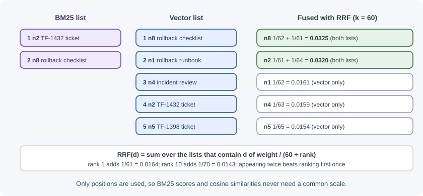

Hybrid Search and Reranking¶
Vector search is good at meaning and weak at exact strings. Ask TaskFlow "how do we undo a broken release?" and embeddings find the rollback runbook even though it never says "undo". Ask "TF-1432 rollback" and the same embeddings may rank three generic rollback notes above the one ticket that matters, because a ticket number carries little meaning for them. Keyword search has the opposite profile.
This lesson covers hybrid search, which runs keyword (BM25) and vector retrieval side by side and fuses the two result lists, most often with reciprocal rank fusion (RRF). It then covers rerankers, the cross-encoder models that reorder a short candidate list far more accurately than either retriever, and the retrieval metrics (recall@k, MRR, and nDCG) that tell you whether each stage earns its latency. The end-to-end RAG pipeline around these steps is covered in building a RAG pipeline.
Why it matters¶
Retrieval quality is decided twice: once when candidates are gathered (anything missed here is gone for good) and once when they are ordered (only the top few reach the model or the user). Hybrid search improves the first step, because keyword and vector retrievers fail on different queries. A reranker improves the second, because it reads the query and each candidate together instead of comparing two precomputed vectors.
Both add cost and latency, and both can make results worse if tuned blindly: a noisy keyword leg can push good semantic hits down, and a reranker can truncate long chunks. Retrieval metrics on labeled queries are what turn "it feels better" into a decision, which is why this lesson treats measurement as part of the design rather than an afterthought.
Real-world usage¶
- Anthropic. In Introducing Contextual Retrieval (September 2024), Anthropic measured retrieval failures as 1 minus recall@20. Contextual embeddings alone cut the failure rate by 35%, adding contextual BM25 (fused with rank fusion and deduplicated) cut it by 49%, and adding a reranker that scored the top 150 chunks and kept 20 cut it by 67%, from 5.7% to 1.9%.
- Microsoft. The Azure AI Search post Outperforming vector search with hybrid retrieval and reranking (2023) reports NDCG@3 on customer datasets of 40.6 for keyword, 43.8 for vector, 48.4 for hybrid (top 50 from each, fused with RRF), and 60.1 for hybrid plus its semantic reranker, with the same ordering on BEIR and on the multilingual MIRACL benchmark.
- BEIR. The BEIR benchmark (NeurIPS 2021) evaluated retrieval models zero-shot on 18 datasets. It found BM25 to be a robust baseline and re-ranking and late-interaction models to give the best zero-shot results on average, at high computational cost.
- Spotify. Its natural language podcast search (2022) added dense retrieval as an extra source next to the existing Elasticsearch retrieval rather than replacing it, noting that dense retrieval often underperforms on exact term matching, and feeds the query-episode cosine similarity into a final reranking model.
Popular tools and providers: Elasticsearch and OpenSearch (BM25,
vector search, and RRF), MongoDB $rankFusion, Weaviate hybrid search,
Qdrant's Query API, PostgreSQL full-text search with pgvector, Cohere
Rerank, Voyage AI rerankers, Azure AI Search's semantic ranker, and
sentence-transformers cross-encoders.
How it works¶
The hybrid retrieval pipeline¶
![Diagram: a user question and its workspace go to two retrievers in parallel, both filtered to that workspace; full-text BM25 search returns its top 50 and is good at exact IDs, names, and codes; vector search returns its top 50 and is good at paraphrases and other languages; reciprocal rank fusion with k equal to 60 merges the lists by rank into up to 100 unique candidates; a cross-encoder reranker reads the question with each candidate, keeps the best 8, and falls back to the fused order on timeout; the top results go to the model's context or the results page.](../hybrid-retrieval-pipeline.svg)
A production retrieval path for TaskFlow's project-knowledge Q&A has four steps: two retrievers in parallel, fusion, and reranking. Each retriever filters by workspace on its own, fusion works on ranks, and the reranker only ever sees a short list. The rest of this section takes the steps one at a time.
What keyword search catches that embeddings miss¶
Embeddings compress a passage into one vector that captures its gist.
Details that do not change the gist get blurred: ticket and order
numbers, error codes, version strings, product and person names, rare
technical terms, and exact quotations. Those are often exactly what users
type. Keyword search treats every distinct term as a separate dimension,
so a rare token such as tf-1432 dominates the score of the one note
that contains it.
| Query | Keyword search | Vector search |
|---|---|---|
TF-1432 rollback |
Finds the ticket note first | Prefers generic rollback notes |
| "how do we undo a broken release" | Needs the same words; misses "roll back a bad deploy" | Finds the runbook by meaning |
| "Ana's notes from the billing sync" | Matches the name exactly | May match any meeting about billing |
| A question in Spanish about English notes | Fails without translation | Works with a multilingual model |
BM25 in one formula¶
BM25 scores a document for a query by summing, over the query terms it contains:
score(term, doc) = IDF(term) * f * (k1 + 1) / (f + k1 * (1 - b + b * docLength / avgDocLength))
IDF(term) = ln(1 + (N - n + 0.5) / (n + 0.5))
Here f is how often the term appears in the document, N is the number
of documents, and n is how many contain the term. Three ideas are
packed in: rare terms matter more (IDF), repeating a term helps with
diminishing returns (k1), and long documents are discounted (b).
Elasticsearch, whose default similarity is BM25, uses k1 = 1.2 and
b = 0.75, and the TypeScript example below uses the same values.
The formula is only as good as the text analysis in front of it. Tokenizers, stemming, and stop words decide what a "term" is, and that is where hybrid search most often goes wrong:
- In a real run of the PostgreSQL example below, the
englishtext search configuration splitTF-1432intotfand-1432, so a different ticket,TF-1398, matched ontfand ranked second. Index identifiers in a separate keyword field matched exactly, or normalize them before indexing. - Without stop-word removal, the TypeScript BM25 example ranked a note titled "How to write a postmortem" first for "how do we undo a broken release?", because "how" was rare in the small corpus.
PostgreSQL's built-in ranking (ts_rank, ts_rank_cd) is not BM25: it
has no corpus-wide IDF. It works as a hybrid leg, and extensions add true
BM25 when you need it.
Fusing result lists with reciprocal rank fusion¶

The two retrievers produce scores on unrelated scales: BM25 scores are unbounded and vary by query, while cosine similarity sits between -1 and 1. Adding them directly lets one leg dominate. Reciprocal rank fusion (Cormack, Clarke, and Buettcher, SIGIR 2009) ignores scores and uses only positions:
RRF(d) = sum over result lists L containing d of weight(L) / (k + rank_L(d))
With k = 60, rank 1 contributes 1/61 and rank 10 contributes 1/70, so
being found by both retrievers matters more than being first in one.
Elasticsearch's RRF retriever defaults rank_constant to 60 and its
documentation notes that RRF needs no tuning; MongoDB's $rankFusion
uses 60 and accepts per-pipeline weights. Defaults differ across
products, though: as of November 2026, Qdrant's RRF uses k = 2 with
zero-based ranks unless you set it, and Weaviate's default hybrid fusion
is relativeScoreFusion, which normalizes scores instead of using ranks.
Check before comparing results between systems.
Practical settings:
- Candidate depth. Take 20 to 100 results from each leg; Microsoft's experiments used the top 50 from each. Fusion cannot promote a document neither leg returned.
- Weights. Start equal. Raise the keyword weight for ID-heavy queries or the vector weight for conversational ones, and measure.
- Score fusion. Normalizing scores (min-max, or mean and standard deviation as in Qdrant's DBSF) and taking a weighted sum keeps more information than ranks, but is more sensitive to outliers and needs tuning per query type.
Rerankers: reading the query and the document together¶
![Diagram: two ways to score relevance; a bi-encoder embeds the query and each document separately into vectors and compares them with cosine similarity, so document vectors are computed once at indexing time and search is fast over millions of documents; a cross-encoder feeds the query and one document together through a transformer that outputs a relevance score, so it sees how each query word relates to each document word and is more accurate, but every query-document pair needs a model call, so it is used only on the top 20 to 100 candidates; the pipeline retrieves broadly with bi-encoders and BM25, then reranks narrowly with a cross-encoder.](../bi-encoder-vs-cross-encoder.svg)
Embedding models are bi-encoders: the query and the document are encoded independently, so document vectors can be computed once and compared with any query in microseconds. That independence is also their limit: the model never sees the query and the document side by side.
A cross-encoder reranker takes the pair as one input and outputs a relevance score. It can notice that the question asks about undoing a release and that the passage describes a rollback, or that a passage mentions the right ticket but says the fix is still pending. Voyage's documentation describes its rerankers exactly this way: a cross-encoder processing each query-document pair jointly, which is why it predicts relevance more accurately than embeddings.
The cost is that nothing can be precomputed: every candidate is a model call, so rerankers run only on a short list. Typical shapes:
- Retrieve 50 to 150 candidates with hybrid search, rerank, keep 5 to 20 for the model's context (Anthropic's experiment: 150 in, 20 out).
- As of November 2026, Cohere's Rerank 5 models accept 32,768 tokens of
query plus document and cover 100+ languages; Voyage's
rerank-3andrerank-3-liteaccept up to 1,000 documents per request. Long chunks are truncated or split, so keep chunks within the limit. - Open cross-encoders run locally through sentence-transformers'
CrossEncoder; language models can also rerank by judging relevance, at a higher cost per candidate. - Late-interaction models (ColBERT-style) sit in between: they keep a vector per token, so they can be precomputed yet still compare at the word level, at the cost of much more storage.
When to rerank¶
Rerank when the candidate list is broad and the top positions matter: RAG answers that use only the top few chunks, search pages where users read the first results, and agent tools that must pick one document. Skip it, or make it optional, when:
- the candidate set is already small and precise, such as filtering a single project's ten notes;
- the latency budget is tight, as in autocomplete, because a reranker adds a network call and model time proportional to the candidates;
- candidate recall is the real problem: a reranker cannot recover a document that retrieval never returned, so fix recall first;
- you cannot measure the gain, because then you cannot tell whether it helps.
Reranker scores are also useful beyond ordering. Cohere describes Rerank 5's scores as calibrated between 0 and 1, which makes a threshold such as "answer only if the best chunk scores above X" practical, provided X is chosen on labeled data for that specific model.
Retrieval metrics¶
![Diagram: two result lists for the question how do we undo a broken release, judged with grades 3 for the runbook n1, 3 for the incident review n4, and 1 for the rollback checklist n8; the BM25 list n7, n4, n1, n3, n2 has recall at 3 of 0.667, reciprocal rank 0.5 because the first relevant result is at position 2, and nDCG at 3 of 0.664; the fused list n1, n4, n3, n7, n8 has the same recall at 3 of 0.667 but reciprocal rank 1.0 and nDCG at 3 of 0.958, because the two best documents are at the top; recall counts what was found, MRR rewards the first hit, nDCG rewards putting the most relevant results first.](../retrieval-metrics.svg)
Each metric answers a different question about a ranked list, given relevance judgments for the query:
| Metric | Question it answers | Formula | Use it for |
|---|---|---|---|
| Recall@k | Did the relevant documents make it into the top k? | relevant found in top k / all relevant | The candidate stage (k = 50 to 150), and context sent to a model |
| Precision@k | How much of the top k is relevant? | relevant in top k / k | Noise in the context window |
| MRR | How soon does the first relevant result appear? | mean of 1 / rank of first relevant | Single-answer lookups, navigation |
| nDCG@k | Are the most relevant results at the top? | DCG@k / ideal DCG@k | Final ordering with graded relevance |
nDCG (Järvelin and Kekäläinen, 2002)
adds up each result's gain discounted by its position,
DCG@k = sum of (2^grade - 1) / log2(position + 1), and divides by the
DCG of the ideal ordering, so 1.0 means perfect order. Graded judgments
(3 for "answers it", 1 for "related") let it distinguish a list that puts
the answer first from one that puts a merely related note first. Some
tools use the grade itself as the gain instead of 2^grade - 1; pick one
and keep it fixed.
In the diagram's example, both lists have the same recall@3 of 0.667, but the fused list puts both answers on top: its MRR is 1.0 against 0.5 and its nDCG@3 is 0.958 against 0.664. Recall tells you whether the evidence is there; MRR and nDCG tell you whether it is where the model and the user will look.
Building a retrieval evaluation set¶
Metrics need judgments. A useful first set for TaskFlow has 100 to 300 queries:
- real questions from logs or support tickets, plus ID-heavy queries ("TF-1432"), name queries, multilingual queries, and questions with no answer in the data;
- for each query, the chunks that answer it, graded (3 answers it, 1 related), judged by people who know the content, with a language model as an assistant at most;
- the workspace each query belongs to, so the evaluation also proves that nothing from other tenants appears.
Run every configuration (BM25 only, vector only, hybrid, hybrid plus
reranker, different k values) over the same set, report metrics per
query type, and keep the set versioned as the data changes. Building and
maintaining such sets in general is covered in
building evaluation sets,
and evaluating whole RAG answers in
evaluating and debugging RAG.
When to use and when not to use¶
| Situation | Choose | Why |
|---|---|---|
| Queries mix natural language with IDs, codes, or names | Hybrid search with RRF | Each retriever covers the other's blind spots |
| Answers use only the top few chunks | Hybrid plus a reranker over 50 to 150 candidates | Cross-encoders order the shortlist best |
| Autocomplete or type-ahead | Keyword or prefix search, no reranker | Every millisecond counts; queries are fragments |
| Exact lookups (ticket number, email address) | A database query or keyword field | No similarity needed |
| Short conversational questions over prose | Vector search, then measure whether hybrid helps | Keyword overlap may be low anyway |
| Tight budget per query | Hybrid without a reranker, or rerank only when top scores are close | Reranking costs a model call per request |
| Many languages | Multilingual embeddings plus per-language analyzers, multilingual reranker | Keyword search needs language-aware analysis |
Practical examples¶
BM25 in TypeScript¶
// src/search/bm25.ts
// Okapi BM25 over an in-memory corpus, with Lucene's IDF and default k1 and b.
// Small enough to read; production systems use a search engine's index instead.
export interface Doc {
id: string;
text: string;
}
export interface Hit {
id: string;
score: number;
}
// Lowercase words and numbers; keeps hyphenated IDs such as "tf-1432" whole.
export const tokenize = (text: string): string[] =>
text.toLowerCase().match(/[\p{L}\p{N}]+(?:-[\p{L}\p{N}]+)*/gu) ?? [];
export function buildBm25(docs: Doc[], { k1 = 1.2, b = 0.75 } = {}) {
const docTokens = docs.map((d) => tokenize(d.text));
const avgLength = docTokens.reduce((sum, t) => sum + t.length, 0) / docs.length;
const docFreq = new Map<string, number>();
for (const tokens of docTokens) {
for (const term of new Set(tokens)) docFreq.set(term, (docFreq.get(term) ?? 0) + 1);
}
// Rare terms (ticket IDs, names) get a high IDF; common words get a low one.
const idf = (term: string) => {
const n = docFreq.get(term) ?? 0;
return Math.log(1 + (docs.length - n + 0.5) / (n + 0.5));
};
return function search(query: string, limit = 10): Hit[] {
const queryTerms = tokenize(query);
const hits: Hit[] = [];
docs.forEach((doc, i) => {
const termFreq = new Map<string, number>();
for (const term of docTokens[i]) termFreq.set(term, (termFreq.get(term) ?? 0) + 1);
const lengthNorm = 1 - b + (b * docTokens[i].length) / avgLength;
let score = 0;
for (const term of queryTerms) {
const f = termFreq.get(term) ?? 0;
if (f > 0) score += (idf(term) * f * (k1 + 1)) / (f + k1 * lengthNorm);
}
if (score > 0) hits.push({ id: doc.id, score });
});
return hits.sort((x, y) => y.score - x.score).slice(0, limit);
};
}
The tokenizer deliberately keeps hyphenated identifiers whole, which is the behavior you want for ticket numbers. A real deployment uses a search engine or database index, but the scoring is the same idea.
Reciprocal rank fusion¶
// src/search/rrf.ts
// Reciprocal rank fusion: score(d) = sum over lists of weight / (k + rank(d)),
// with ranks starting at 1. Only ranks matter, so BM25 and cosine scores
// never have to be put on the same scale.
export interface RankedList {
name: string;
ids: string[]; // best first, as returned by one retriever
weight?: number; // default 1
}
export interface FusedHit {
id: string;
score: number;
ranks: Record<string, number>; // where each retriever placed it
}
export function reciprocalRankFusion(
lists: RankedList[],
{ k = 60, limit = 10 } = {},
): FusedHit[] {
const fused = new Map<string, FusedHit>();
for (const { name, ids, weight = 1 } of lists) {
ids.forEach((id, index) => {
const hit = fused.get(id) ?? { id, score: 0, ranks: {} };
if (hit.ranks[name] !== undefined) return; // ignore duplicates within a list
hit.ranks[name] = index + 1;
hit.score += weight / (k + index + 1);
fused.set(id, hit);
});
}
return [...fused.values()].sort((a, b) => b.score - a.score).slice(0, limit);
}
Keeping ranks on each fused hit makes debugging easy: you can log which
retriever found a chunk and where, which is the first thing to check when
a result looks wrong.
Retrieval metrics¶
// src/eval/retrieval-metrics.ts
// Offline retrieval metrics. `ranked` is a result list (best first); `labels`
// maps each judged document ID to a relevance grade (0 = not relevant).
export type Labels = Map<string, number>;
const relevantIds = (labels: Labels) => [...labels].filter(([, g]) => g > 0).map(([id]) => id);
// Share of all relevant documents that appear in the top k.
export function recallAtK(ranked: string[], labels: Labels, k: number): number {
const relevant = relevantIds(labels);
if (relevant.length === 0) return 0;
const top = new Set(ranked.slice(0, k));
return relevant.filter((id) => top.has(id)).length / relevant.length;
}
// 1 / rank of the first relevant result, 0 if none is returned.
export function reciprocalRank(ranked: string[], labels: Labels): number {
const index = ranked.findIndex((id) => (labels.get(id) ?? 0) > 0);
return index === -1 ? 0 : 1 / (index + 1);
}
// Normalized discounted cumulative gain with graded relevance (gain 2^grade - 1).
export function ndcgAtK(ranked: string[], labels: Labels, k: number): number {
const dcg = (grades: number[]) =>
grades.slice(0, k).reduce((sum, g, i) => sum + (2 ** g - 1) / Math.log2(i + 2), 0);
const ideal = dcg([...labels.values()].sort((a, b) => b - a));
return ideal === 0 ? 0 : dcg(ranked.map((id) => labels.get(id) ?? 0)) / ideal;
}
export const mean = (values: number[]) => values.reduce((s, v) => s + v, 0) / values.length;
Math.log2(i + 2) is the position discount for zero-based index i
(position 1 divides by log2(2) = 1). Average each metric over all
queries; MRR is the mean of reciprocalRank.
Comparing BM25, vector, and hybrid on labeled queries¶
// src/scripts/hybrid-demo.ts
// Run: node --experimental-strip-types src/scripts/hybrid-demo.ts
import { buildBm25, type Doc } from "../search/bm25.ts";
import { reciprocalRankFusion } from "../search/rrf.ts";
import { mean, ndcgAtK, recallAtK, reciprocalRank, type Labels } from "../eval/retrieval-metrics.ts";
const notes: Doc[] = [
{ id: "n1", text: "Runbook: roll back a bad deploy with the previous image tag, then check health." },
{ id: "n2", text: "TF-1432: payment webhook retries fail after the release; rollback planned for Friday." },
{ id: "n3", text: "Release notes for 3.2: new calendar view and faster search." },
{ id: "n4", text: "Incident review: the broken release on March 3 was undone by turning off its feature flag." },
{ id: "n5", text: "TF-1398: calendar sync drops recurring tasks for some users." },
{ id: "n6", text: "Meeting notes: freeze releases during the billing migration." },
{ id: "n7", text: "How to write a postmortem: timeline, impact, causes, and actions." },
{ id: "n8", text: "Rollback checklist for database migrations: expand, migrate, contract." },
];
// Ranks an embedding model might return (assumed for the demo, not computed here):
// it understands "undo" ~ "roll back" but blurs the ticket ID.
const vectorRanks: Record<string, string[]> = {
"TF-1432 rollback": ["n8", "n1", "n4", "n2", "n5"],
"how do we undo a broken release": ["n1", "n4", "n8", "n3", "n6"],
};
// Relevance judgments: 3 = answers the question, 1 = related.
const judgments: Record<string, Labels> = {
"TF-1432 rollback": new Map([["n2", 3], ["n8", 1]]),
"how do we undo a broken release": new Map([["n1", 3], ["n4", 3], ["n8", 1]]),
};
const bm25 = buildBm25(notes);
const scores: Record<string, number[][]> = { bm25: [], vector: [], rrf: [] };
for (const [query, labels] of Object.entries(judgments)) {
const lexical = bm25(query, 5).map((h) => h.id);
const semantic = vectorRanks[query];
const fused = reciprocalRankFusion(
[{ name: "bm25", ids: lexical }, { name: "vector", ids: semantic }],
{ k: 60, limit: 5 },
);
console.log(`\n${query}`);
console.log(" bm25: ", lexical.join(" "));
console.log(" vector:", semantic.join(" "));
console.log(" rrf: ", fused.map((h) => `${h.id}(${h.score.toFixed(4)})`).join(" "));
const lists = { bm25: lexical, vector: semantic, rrf: fused.map((h) => h.id) };
for (const [name, ranked] of Object.entries(lists)) {
scores[name].push([recallAtK(ranked, labels, 3), reciprocalRank(ranked, labels), ndcgAtK(ranked, labels, 3)]);
}
}
console.log("\nmean over both queries recall@3 MRR nDCG@3");
for (const [name, rows] of Object.entries(scores)) {
const [r, m, n] = [0, 1, 2].map((c) => mean(rows.map((row) => row[c])).toFixed(3));
console.log(` ${name.padEnd(22)} ${r} ${m} ${n}`);
}
Output of a real run on Node.js 22 (the BM25 rankings, the fusion, and the metrics are computed; the vector rankings are the assumed inputs above):
TF-1432 rollback
bm25: n2 n8
vector: n8 n1 n4 n2 n5
rrf: n8(0.0325) n2(0.0320) n1(0.0161) n4(0.0159) n5(0.0154)
how do we undo a broken release
bm25: n7 n4 n1 n3 n2
vector: n1 n4 n8 n3 n6
rrf: n1(0.0323) n4(0.0323) n3(0.0313) n7(0.0164) n8(0.0159)
mean over both queries recall@3 MRR nDCG@3
bm25 0.833 0.750 0.832
vector 0.750 1.000 0.566
rrf 0.833 1.000 0.834
Fusion matched the best single retriever on every metric without being
told which query type it faced. It did not fix everything: for the
ticket query it put the generic checklist n8 just above the ticket
n2, which is the kind of near-tie a reranker resolves. Two queries
prove nothing statistically; the same script over a few hundred judged
queries is how the decision should be made.
Hybrid search in PostgreSQL¶
-- db/queries/hybrid_search.sql
-- Hybrid search in one statement: full-text and vector candidates fused with RRF (k = 60).
-- $1 = query text, $2 = query embedding as '[...]', $3 = workspace id
WITH q AS (
-- OR the terms together: natural-language questions rarely contain every word of a note
SELECT replace(plainto_tsquery('english', $1)::text, ' & ', ' | ')::tsquery AS query
),
lexical AS (
SELECT id, row_number() OVER (ORDER BY score DESC) AS rank
FROM (
SELECT id, ts_rank_cd(search_tsv, q.query) AS score
FROM note_chunks, q
WHERE workspace_id = $3 AND search_tsv @@ q.query
ORDER BY score DESC
LIMIT 50
) AS l
),
semantic AS (
SELECT id, row_number() OVER (ORDER BY distance) AS rank
FROM (
SELECT id, embedding <=> $2::vector AS distance
FROM note_chunks
WHERE workspace_id = $3
ORDER BY distance
LIMIT 50
) AS s
)
SELECT id,
COALESCE(1.0 / (60 + lexical.rank), 0)
+ COALESCE(1.0 / (60 + semantic.rank), 0) AS rrf_score,
lexical.rank AS lexical_rank,
semantic.rank AS semantic_rank
FROM lexical FULL OUTER JOIN semantic USING (id)
ORDER BY rrf_score DESC
LIMIT 10;
It assumes a stored full-text column and index on note_chunks:
-- db/migrations/005_note_chunks_fulltext.sql
ALTER TABLE note_chunks
ADD COLUMN search_tsv tsvector
GENERATED ALWAYS AS (to_tsvector('english', content)) STORED;
CREATE INDEX note_chunks_search_tsv ON note_chunks USING gin (search_tsv);
plainto_tsqueryANDs every word, so a natural-language question rarely matches anything; replacing&with|turns it into an OR query, andts_rank_cdranks the matches.- Each leg limits itself to 50 candidates before numbering, so the vector leg can use the HNSW index, and both legs filter by workspace.
FULL OUTER JOINkeeps documents found by only one leg, withCOALESCEadding nothing for the missing rank.
This query was run in PGlite on the eight demo notes plus a note from
another workspace (which never appeared). Two findings from that run are
worth knowing before you ship it. The query text "how do we undo a broken
release" became 'undo' | 'broken' | 'releas', so the stemmer handled
"release" and "releases" alike. The query "TF-1432 rollback" became
'tf' | '-1432' | 'rollback', so the ticket TF-1398 matched on tf:
keep identifiers in their own column and match them exactly.
Hybrid search in MongoDB with $rankFusion¶
// src/search/mongo-text-index.ts
// Full-text index for the lexical half of hybrid search (MongoDB Search, Lucene-based).
import { MongoClient } from "mongodb";
const client = new MongoClient(process.env.MONGODB_URI ?? "mongodb://localhost:27017");
try {
await client.db("taskflow").collection("note_chunks").createSearchIndex({
name: "note_chunks_text",
type: "search",
definition: {
mappings: {
dynamic: false,
fields: {
text: { type: "string", analyzer: "lucene.english" }, // stemming and stop words
workspaceId: { type: "objectId" }, // for the equals filter
},
},
},
});
} finally {
await client.close();
}
// src/search/mongo-hybrid-search.ts
// Hybrid retrieval in one aggregation: $rankFusion merges a full-text $search
// and a $vectorSearch with reciprocal rank fusion (MongoDB 8.0 or later).
import { MongoClient, type ObjectId } from "mongodb";
const client = new MongoClient(process.env.MONGODB_URI ?? "mongodb://localhost:27017");
const chunks = client.db("taskflow").collection("note_chunks");
export interface HybridHit {
_id: ObjectId;
noteId: ObjectId;
text: string;
score: number; // the RRF score
}
export async function hybridSearch(
workspaceId: ObjectId,
queryText: string,
queryVector: number[],
{ limit = 50, vectorWeight = 1, textWeight = 1 } = {},
): Promise<HybridHit[]> {
return chunks
.aggregate<HybridHit>([
{
$rankFusion: {
input: {
pipelines: {
vector: [
{
$vectorSearch: {
index: "note_chunks_vector",
path: "embedding",
queryVector,
numCandidates: Math.min(limit * 20, 10_000),
limit,
filter: { workspaceId },
},
},
],
text: [
{
$search: {
index: "note_chunks_text",
compound: {
must: [{ text: { query: queryText, path: "text" } }],
filter: [{ equals: { path: "workspaceId", value: workspaceId } }],
},
},
},
{ $limit: limit },
],
},
},
combination: { weights: { vector: vectorWeight, text: textWeight } },
},
},
{ $limit: limit },
{ $project: { noteId: 1, text: 1, score: { $meta: "score" } } },
])
.toArray();
}
$rankFusionruns each named pipeline, deduplicates, and scores every document withweight * 1 / (60 + rank)summed over the pipelines it appears in. Each input pipeline may contain only selection and ranking stages such as$search,$vectorSearch,$match,$sort, and$limit, all on the same collection.- Both legs filter by
workspaceId: the vector leg through itsfilterfield, the text leg through acompoundfilterclause. - Add
scoreDetails: trueand project{ $meta: "scoreDetails" }to see each document's rank in each pipeline while tuning.
These modules were type-checked against the MongoDB Node.js driver; they need MongoDB 8.0 or later with MongoDB Search and Vector Search enabled.
Reranking the fused candidates¶
// src/search/rerank.ts
// Reorders retrieval candidates with a hosted cross-encoder (Cohere Rerank shown).
// The model ID comes from configuration; choose it from the provider's model list.
import { CohereClientV2 } from "cohere-ai";
const cohere = new CohereClientV2({ token: process.env.COHERE_API_KEY });
export interface Candidate {
id: string;
text: string;
}
export interface Reranked extends Candidate {
relevance: number; // 0 to 1 for this provider; calibrate any threshold per model
}
export async function rerank(query: string, candidates: Candidate[], topN = 8): Promise<Reranked[]> {
if (candidates.length === 0) return [];
const model = process.env.RERANK_MODEL;
if (!model) throw new Error("RERANK_MODEL is not set");
const response = await cohere.rerank(
{
model,
query,
documents: candidates.map((c) => c.text),
topN: Math.min(topN, candidates.length),
},
{ timeoutInSeconds: 3, maxRetries: 1 }, // reranking must not stall the answer
);
// Results come back best first; `index` points into the documents we sent.
return response.results.map((r) => ({ ...candidates[r.index], relevance: r.relevanceScore }));
}
// Use the reranker when it answers in time; otherwise keep the fused order.
export async function rerankOrFallback(query: string, candidates: Candidate[], topN = 8) {
try {
return { results: await rerank(query, candidates, topN), reranked: true };
} catch (err) {
console.warn("rerank failed, using fused order", err);
return { results: candidates.slice(0, topN).map((c) => ({ ...c, relevance: Number.NaN })), reranked: false };
}
}
- Results reference candidates by
index, so the original IDs, metadata, and tenant checks stay on your side. - The short timeout and the fallback keep a slow reranker from turning into a slow answer; record how often the fallback runs.
- Equivalents: Voyage AI's rerank endpoint takes the same query and document list, Azure AI Search has a built-in semantic ranker, and a local model works through sentence-transformers.
The module was type-checked against the cohere-ai SDK and exercised
against a local stub of the rerank endpoint, with every outgoing request
redirected to the stub: the SDK sent the configured model, the query, the
documents, and top_n, results were mapped back to candidate IDs, and a
503 from the stub triggered the fallback.
A local cross-encoder in Python looks like this:
# scripts/rerank_local.py
# Reranks candidates with an open cross-encoder on your own hardware.
import os
from sentence_transformers import CrossEncoder
model = CrossEncoder(os.environ["RERANK_MODEL"]) # a Hugging Face cross-encoder ID
query = "how do we undo a broken release"
candidates = [
"Incident review: the broken release on March 3 was undone by turning off its feature flag.",
"Release notes for 3.2: new calendar view and faster search.",
"Runbook: roll back a bad deploy with the previous image tag, then check health.",
]
for hit in model.rank(query, candidates, top_k=2, return_documents=True):
print(f"{hit['score']:.3f} {hit['text']}")
This script was not run here because it downloads model weights; the
rank() signature (query, documents, top_k, return_documents,
returning corpus_id, score, and text) was checked against the
sentence-transformers 6.3 source.
Best practices¶
- Run keyword and vector retrieval side by side when queries contain IDs, names, or codes, and fuse with RRF before reaching for score blending.
- Give identifiers their own exactly matched field, and check what your text analyzer does to them.
- Retrieve deep (50 to 150 candidates), rerank, and send only the top few to the model.
- Keep tenant filters inside every leg, not only after fusion.
- Put a timeout and a fallback around the reranker, and monitor latency and fallback rate.
- Measure recall@k for candidate generation and nDCG or MRR for the final order on a labeled, versioned query set, broken down by query type.
- Re-run the evaluation whenever the embedding model, analyzer, chunking, fusion weights, or reranker changes.
- Calibrate any relevance threshold per model on labeled data.
In production¶
- Searches for ticket numbers return the wrong ticket.
Detect: queries matching an ID pattern have low MRR; logs show other
tickets ranked first. Cause: the text analyzer splits identifiers
(
TF-1432intotfand-1432), or only vector search runs. Fix: index IDs in a keyword field, route ID-shaped queries to exact match, and keep a BM25 leg in hybrid search. - Hybrid results got worse than vector-only for conversational questions. Detect: nDCG drops for long natural-language queries after enabling hybrid. Cause: a noisy keyword leg (OR queries, no stop words) pushes semantic hits down through fusion. Fix: tune the analyzer, lower the keyword weight for conversational queries, or rerank the fused list.
- Answer latency doubled after adding a reranker. Detect: p95 latency rises in step with candidate count; traces show the rerank span dominating. Cause: too many or too long candidates per request, or a slow region. Fix: rerank fewer candidates, trim chunks, set a timeout with fallback, and cache results for repeated queries.
- The reranker ignores the end of long chunks.
Detect: answers miss facts that appear late in long chunks. Cause:
the reranker truncates documents beyond its token limit (Cohere's
maxTokensPerDocdefaults to 4,096). Fix: chunk to fit the limit and check the provider's truncation behavior. - "No relevant results" appears for questions that have answers. Detect: abstention rate rises after a model change. Cause: a fixed score threshold carried over from another embedding or rerank model. Fix: recalibrate thresholds per model on labeled data.
- Offline metrics look great but users still complain. Detect: nDCG on the evaluation set is stable while thumbs-down rates rise. Cause: the evaluation set no longer matches real queries (new features, new languages, more ID searches). Fix: refresh the set from recent logs and report metrics per query type.
- Results from another workspace appear after fusion. Detect: cross-tenant tests fail only on hybrid queries. Cause: one leg (often the keyword index) lacks the tenant filter. Fix: filter inside every leg and keep cross-tenant tests for each retrieval path.
Important terminology¶
- Lexical (keyword) search: Retrieval by matching terms, usually ranked with BM25.
- BM25: A ranking function based on term frequency with saturation, inverse document frequency, and document length normalization.
- Analyzer: The tokenizer and filters (lowercasing, stemming, stop words) that turn text into index terms.
- Hybrid search: Running lexical and vector retrieval together and fusing their results.
- Reciprocal rank fusion (RRF): Fusing ranked lists by summing
1 / (k + rank)for each list a document appears in. - Bi-encoder: A model that embeds queries and documents separately.
- Cross-encoder (reranker): A model that scores a query and a document together.
- Late interaction: Comparing per-token vectors of query and document, as in ColBERT-style models.
- Recall@k: The share of relevant documents found in the top k.
- MRR: The mean over queries of 1 divided by the rank of the first relevant result.
- nDCG@k: Position-discounted gain of a ranking divided by that of the ideal ranking.
- Relevance judgments: Labels saying which documents answer a query, often graded.
Common mistakes and misconceptions¶
- Assuming vector search makes keyword search obsolete.
- Adding raw BM25 and cosine scores together.
- Fusing or reranking too few candidates, so the right chunk never enters the pool.
- Expecting a reranker to fix poor candidate recall.
- Filtering by tenant after fusion instead of inside each leg.
- Comparing RRF results across products without checking their
kand fusion defaults. - Tuning on a handful of queries and calling it an evaluation.
- Reporting only recall, which ignores order, for a feature that only shows the top three results.
Revision questions¶
- Give two kinds of queries where keyword search beats vector search and two where vector search wins. Why does each fail where it does?
- Explain the three ideas inside the BM25 formula and what
k1andbcontrol. - A document is ranked 3rd by BM25 and 7th by vector search. Another is
ranked 1st by vector search only. With
k = 60, which wins under RRF? - Why does RRF use ranks instead of scores, and when might score fusion be the better choice?
- Explain why a cross-encoder is more accurate than a bi-encoder but cannot be used to search a whole collection.
- Your reranker adds 300 ms at the 95th percentile. What would you measure and change before removing it?
- For a list whose relevance grades are 0, 3, 0, 1, 3 at positions 1 to 5, compute recall@3 and MRR, given three relevant documents in total.
- Which metric would you use for the candidate stage of a RAG pipeline, and which for the final top five? Explain why.
Further learning¶
- Reciprocal Rank Fusion paper (Cormack et al., 2009)
- Elasticsearch: Reciprocal rank fusion
- MongoDB: $rankFusion
- Qdrant: Hybrid and multi-stage queries
- Weaviate: Hybrid search
- Cohere: Rerank
- Voyage AI: Rerankers
- BEIR benchmark (arXiv)
- Next: embeddings and vector search interview questions and answers. Back to the embeddings and vector search overview.